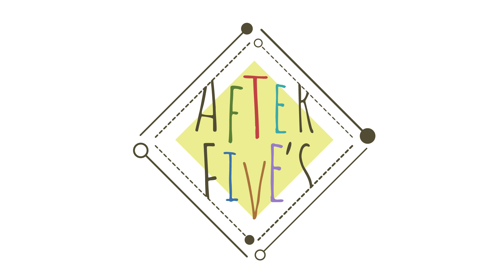

作成中のウェブサイト。
2021/02/17
先ほど五味田のイラストを完成させて納品しました。
以前久次米さんも提出しましたが、webには向かないイラストなので描き直す予定です。
五味田の立ち絵を基準に、次は茜さんに着手していきます。
2021/02/18
茜さんの下書き完了。線画起こし開始。
2021/02/19
茜さん色付け開始。線画修正、更に長髪・短髪バージョンにレイヤー分別。
2021/02/21
茜さん完成＆提出。
三人並べてみたが、やっぱり久次米さんだけちょっと浮くので早めに修正したい…。
2021/02/22
橘の下書き、及び線画起こし。初期イメージと大分変わり、チャラさ＆暗さが併存するような容姿に。
2021/03/19
会議の結果、新しいサイトの全体構成及び配色イメージが共有される。
探索者の詳細ページに載せる文章について、確定。
八つ橋ありがとう。
2021/03/20
ホーム画面について共有イメージの再現中。
背景色：rgb(170, 167, 155)
文字色：rgb(63, 53, 21)
2021/03/20
シナリオページについて、本積み上げ案を実装中。
その他：誤字訂正「kujime」
2021/03/21
「闇をゆく者たちの宴」について共有イメージの再現中。
大まかな配置、完了。
美音ちゃんがメモしてくれた配置のうろ覚え再現なので、間違っていたら教えてくさだいまし。
キャラクターページについて共有イメージの再現中。
大まかな配置、完了。
2021/03/24
「闇をゆく者たちの宴」について共有イメージの再現中（更新）。
スマホレイアウト化完了。
久次米さんの立ち絵を更新。
2021/03/26
あかねさんの詳細ページについて、共有イメージの再現。
スマホレイアウト化完了。
取り消し線と、背景素材の共有（美音ちゃん）。
お酒がうまい。
2021/03/27
久次米さんの詳細ページについて、共有イメージの再現。
スマホレイアウト化完了。
取り消し線と、背景素材の共有（美音ちゃん）。
ねむい。
久次米さんの水色について、characterの立ち絵背景の水色では色が明るすぎてしまい、
見えにくかったので少し彩度をお落とした色に変更。rgb(48, 140, 140)
2021/03/28
シナリオページについて、ホバー時にセリフが浮かぶ処理を構築中。
フォントについて、軽度な調整を実施。
2021/03/30
シナリオページについて、ホバー時にセリフが浮かぶ処理を構築、スマホレイアウト未完。
久次米さんの詳細について、バグを発見（スマホ表示）。
2021/03/31
シナリオページの処理、完了。スマホ版においても完了。
ナビゲーションバーについて、現在位置が黒く表示されるように変更。
2021/04/01
サイトアイコンを設定。
aboutページに着手。ドキュメントの方の作業報告も、newsに記入しました。
2021/04/02
メンバーアイコンを設定
2021/04/11
ページTOPへ戻る動作（スクロールの手間軽減）を追加。topページのみ実装。
画像はイラスト屋
2021/04/12
ログイン画面を実装。
デザインは要検討